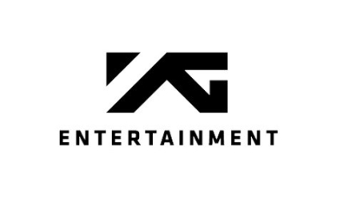
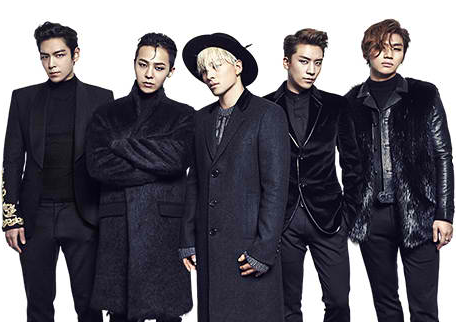
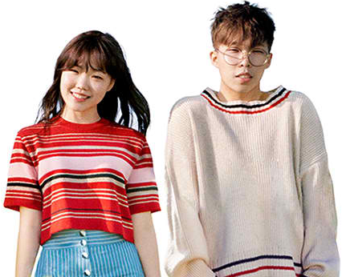
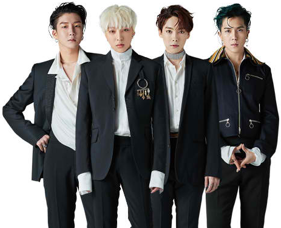
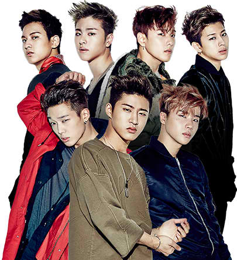
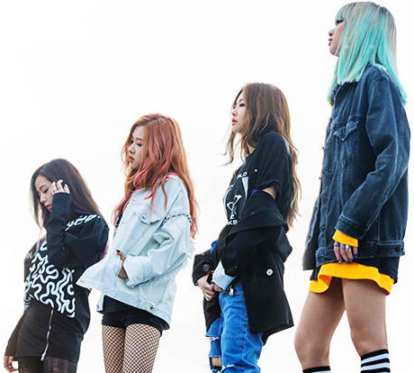

KPOP Groups

BIGBANG is a group that consists of five members including G-DRAGON, TAEYANG, T.O.P, DAESUNG, and SEUNGRI
that is recognized for their musical ability to appeal to the general public and also playing a significant role
as the leaders of K-pop. Since their debut in 2006, BIGBANG has been arousing listeners with their powerful music
while also bringing out their emotions with sentimental melodies by producing their own music that is unique in
their own color.
AKDONG MUSICIAN heals people by singing about things that happen in our everyday lives in their own special way.
The group debuted successfully in 2014 with “200%”, “Give Love” and “Time and Fallen Leaves”. However, the duo did not
become complacent and settle for the music that they are good at and confident in. AKMU released “SPRING” in May of 2016
and proved they could take on variety of music genres through songs such as “RE-BYE” and “HOW PEOPLE MOVE”. The group also
won recognition for their live singing at numerous live performances. All in all, AKMU successfully created a unique image
for themselves as a group that sings about everyday life in a relatable way.


WINNER’s debut album “2014 S/S” was released in August 2014. Upon release, the album topped all the charts, and WINNER
set an incredible record for a rookie by becoming no.1 on music show charts in the shortest time. WINNER proved that it is
indeed a “monster rookie” by dominating all the new artist awards at the end of 2014.
In 2016, WINNER was the first YG group to make a comeback with their album “EXIT,” a part of its year-long project
“EXIT MOVEMENT.” Fans were excited just by the announcement of WINNER launching a year-long project. WINNER will be a breath
of fresh air to those who seek something new and different.
iKON debuted in September last year, and after releasing their first album in December, they held a solo concert and
went on a tour around Asia. Now, they are ready to make a surprise comeback.
iKON’s new digital single shows off their unique charm that is just as refreshing and sweet as their biggest hit song
“MY TYPE”. The song boasts a perfect combination between cheerful piano and drum sounds, ear catching hook, and witty rap
lyrics.


On August 8, 2016, BLACKPINK came out into the world with “WHISTLE” and “BOOMBAYAH”. Upon debut, BLACKPINK took the
charts by storm and has gone viral not only in Korea but also around the world. The quartet left a strong impression before
wrapping up their debut album promotions. Now, they are back with great new singles that will exceed anyone’s expectations. The
new songs in BLACKPINK’s “SQUARE TWO” have tranquil melodies that are perfect for the autumn. The girls are ready to show a totally
different side of themselves, a stark contrast to their first album “SQUARE ONE”.